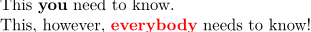

Syntax (autogenerated)
| \setuphighlight[...,...][...=...,...] | |
| [...,...] | name |
| command | yes no |
| style | style command |
| color | color |
Description
Allows customization of macros defined by \definehighlight.
Example
-
\definehighlight [important] [style=bold] %% define a highlight \definehighlight [reallyimportant] [important] %% inherit setups \setuphighlight [reallyimportant] [color=red] %% modify the copy \starttext \startTEXpage This \important{you} need to know.\par This, however, \reallyimportant{everybody} needs to know! \stopTEXpage \stoptext
produces
- 
See also
- \definehighlight
- \installstyleandcolorhandler / mult-aux.mkiv
- \definestartstop
- \setupbackend
- core-sys.mkiv
Help from ConTeXt-Mailinglist/Forum
All issues with: